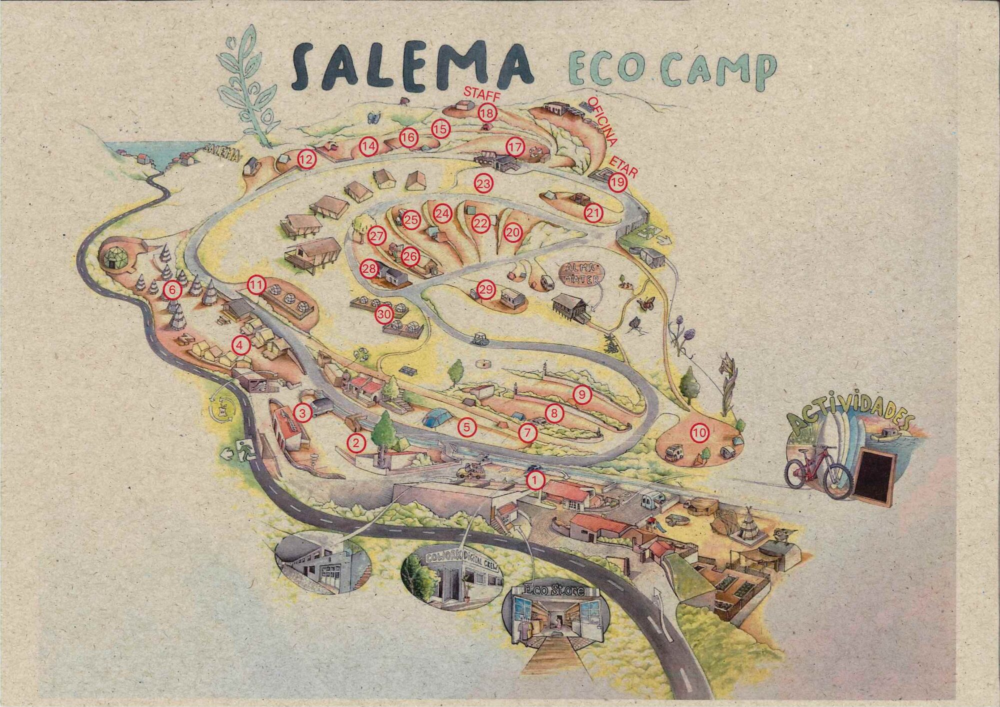
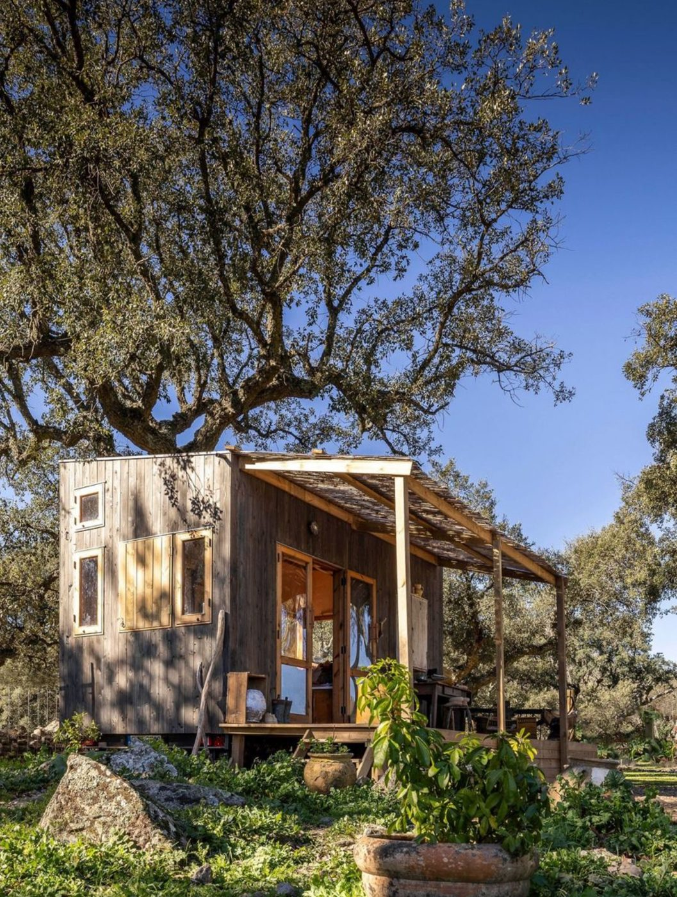
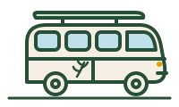
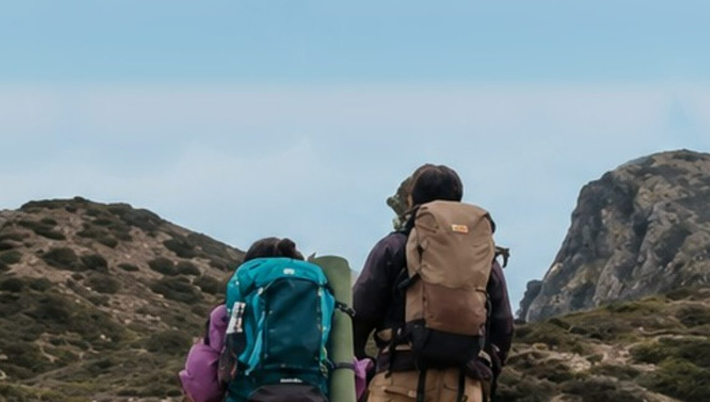
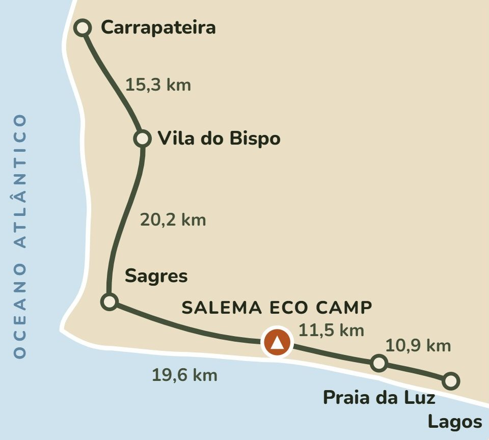
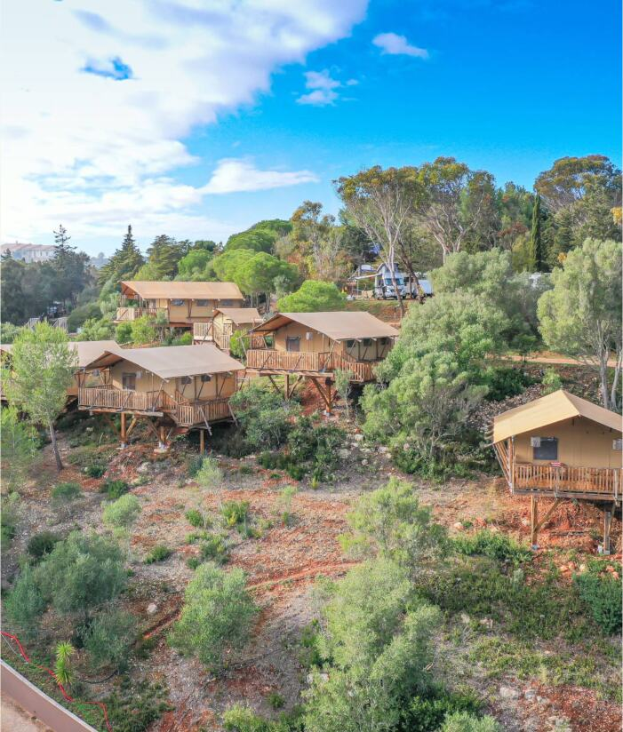
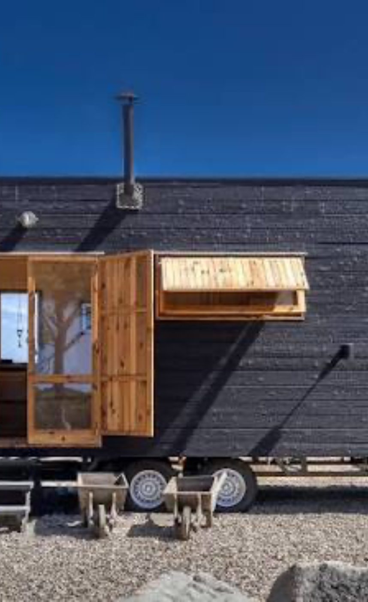

Aqui, cada gesto conta.
Aqui trabalhamos o turismo do futuro, onde menos é mais. O Salema Eco Camp é um espaço carbono-neutro e zero waste, onde a ecologia e a sustentabilidade estão no centro de tudo o que fazemos. Só o conseguimos com a sua ajuda: separe o lixo, faça compostagem, poupe água e energia.
Pergunte ao parque
Horários, regras, atividades, como chegar à praia. Responde em qualquer língua.

Eco Living Your own home in the park, by the oceanYour tiny house or a new timber mobile home, on a spacious plot inside Salema Eco Camp.
@salemaecocamp: o vale, a praia e a vida no parque.

10:00 · 12:00 · 15:00 · 17:00, ida e volta. Reserve na receção.
Diga-nos o local e envie a foto. Só a equipa vê.
Reservar
Faça o seu pedido: abre-se o WhatsApp ou o email da secção certa, com a mensagem já escrita. Não paga nada agora; a equipa confirma consigo.
Anúncios
Como numa revista: boleias para a praia, coisas para emprestar, ajuda que procura ou oferece. Quem quiser responde pelo contacto do anúncio.
O parque
Guardar no telemóvel
Tenha o Magazine sempre à mão, com um ícone no ecrã como uma aplicação. Não ocupa espaço nem precisa de loja de aplicações.
Mapa do parque
As zonas do parque, numeradas. Diga o número da sua zona quando pedir ajuda ou avisar uma avaria.
Desenho de Pedro Pereira. Toque no mapa para o ver em tamanho grande.Shuttle para a Praia da Salema
Temos um shuttle grátis entre o parque e a Praia da Salema. Há quatro horários por dia, ida e volta: 10:00, 12:00, 15:00 e 17:00. Reserve o seu lugar na receção, por WhatsApp.

Salema Base Camp · Trilho dos PescadoresUma base. Cinco etapas. Zero stress.
Durma na mesma cama todas as noites e caminhe o Trilho dos Pescadores da Rota Vicentina, de Carrapateira a Lagos: 5 etapas, 77,5 km, tudo a partir de uma só base. Recebemos dezenas de caminhantes todos os dias, até 40 check-ins num único dia.
- Fique connosco. Sem mudar de alojamento.
- Tratamos da logística: levamo-lo de manhã, vamos buscá-lo ao fim do dia.
- Caminhe todas as etapas, de Carrapateira a Lagos. Sem stress, sem pressa.
- Restaurante para todos: pequeno-almoço, almoço e jantar, além de snacks de trilho para a caminhada.

23 pontos de interesse
No parque: restaurante e bar, Loja Eco, lavandaria e massagens. Meia-pensão ou pensão completa no restaurante.
Para reservar o Base Camp: reservas@salemaecocamp.com · +351 282 695 201. Membro associado da Rota Vicentina.
O Trilho dos Pescadores na Rota VicentinaRegulamento interno
As regras do parque, como estão no regulamento do Salema Eco Camp. Ao entrar no Magazine, o hóspede confirma que as conhece.
Receção
Prolongar a estadia ou reservar nova visita: o alojamento reserva-se no nosso site.
Reservar alojamentoContactos úteis
- Receção / Portaria (24 horas)+351 282 695 201
- Receção / Portaria (24 horas)+351 926 636 033
- Restaurante Nazari+351 282 030 672
- Eco Store+351 968 727 036
- Atividades (só WhatsApp)+351 961 956 143
- Restaurante Nazarinazari@salemaecocamp.com
- Eco Storesales@salemaecostore.com
- Atividades, Alma Mater e SERatividades@salemaecocamp.com
- Número Europeu de Emergência112
- Linha Saúde 24+351 808 24 24 24
- Bombeiros de Vila do Bispo+351 282 639 285
- GNR de Vila do Bispo+351 282 630 010
Passagem pedonal
Aberta das 7:00 às 22:00. Tem código, que é alterado regularmente: peça o código atual na receção.
Avarias
Algo estragado no seu alojamento ou nos espaços comuns? Escreva o local e o que se passa; abre-se o WhatsApp da equipa e pode juntar a foto. Só a equipa vê.
Perdidos e achados
Esqueceu-se de alguma coisa no parque ou no restaurante? Descreva o objeto e nós procuramos.

Onde estamos
Salema é uma vila piscatória milenar da freguesia de Budens. O nome vem do árabe Salam, porto seguro.
Quinta dos Carriços, Praia da Salema, 8650-196 Budens. A 1 km da praia, no coração do Trilho dos Pescadores. Aberto todo o ano.
Be part of our Eco Living project, here at Salema Eco Camp.
Your tiny house or a new mobile home, good neighbours and a simpler way of life, by the ocean.
Salema Eco Camp · Praia da Salema, Budens · Southwest Alentejo and Vicentine Coast Natural ParkYour own home, in a park that cares for its place
A new timber mobile home, or your own tiny house, with installation and connections included.
Always roomy, with a garden and free irrigation water. No cars in the residential area.
Carbon neutral and zero waste, with its own sustainability department.
Neighbours who share the same rhythm: the sea, nature and slow living.

The placeSalema, the safe harbour
Salema comes from the Arabic Salam: safe harbour. It was given that name many centuries ago and still is one, a harbour that embraces those who seek comfort, friendship and simplicity.
At the south-western tip of Europe, by the ocean, in a natural park, with incredible surf spots and next to one of the most beautiful hiking trails in Europe. Here, peace and nature are the mentors of the project.
For those who live in connection with the sea and nature, and value the real and simple things in life
People who are active, physically and mentally, with a holistic view of life. At heart, we are creating a concept of cooperation and a fusion of cultures, built around sustainability, sharing and quality.
Surfing, kitesurfing, windsurfing, diving and snorkelling.
Hiking, trekking, birdwatching and yoga.
Families with children and couples who want continuity.
Sustainability, sharing and quality, in a regenerative vision of the place.
Two ways to be part of Eco Living
We host a limited number of existing tiny houses, because we want to keep the place calm and spacious. Admission is case by case.
Built in timber, with natural materials, and installed on your plot, with the connections included.
Timber homes, built with nature in mind
Timber and natural elements take priority, in both mobile homes and tiny houses.
Produced with natural products and a low environmental footprint.
Built to last, with careful finishing and everyday comfort.
Designed for around four months of use a year, with little energy needed to heat or cool.
We are finalising an agreement with a manufacturing partner to supply these homes. News soon.
Which tiny houses we accept
Places are limited and admission is decided by us, case by case. We give priority to tiny houses from Salema Eco Camp's partner company in Portugal.
Your plot: a life lived more outdoors
Always roomy, with free irrigation water from the park's treatment plant for the garden and vegetable patch.
Cars do not drive in the residential area. Shared parking is close by.
Your own deck, outdoor kitchen, garden and vegetable patch: create real comfort outside on your plot.
Water and electricity on individual meters. You can generate solar energy.
Coworking, yoga room and shared fire pits, already running in the park.
Clear, transparent terms, set out in the contract from day one.
Your investment also works while you are away
We can make your home earn from visitors, in a shared and harmonious way, with an attractive return.
You take part only if you wish, and decide when to make it available.
We handle the management, so you find it ready when you return.
From first visit to keys in hand
- Visit
See the park and tell us what you have in mind: your tiny house or a new mobile home.
- Proposal
You receive a personalised proposal, tailored to you.
- Admission or order
Your tiny house is approved, or your mobile home is ordered and built once the sale is confirmed.
- Installation
We place it on your plot and make all the connections.
- Arrival
You sign the plot contract and start living in Eco Living.

Shall we talk?
Come and see the park and your future plot.
- Emailjoaquimlourenco@salemaecocamp.com
- WhatsApp+351 969 000 575